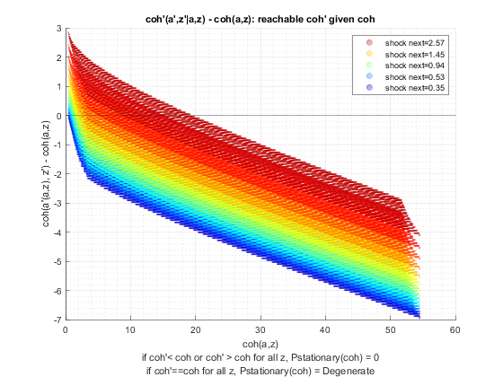
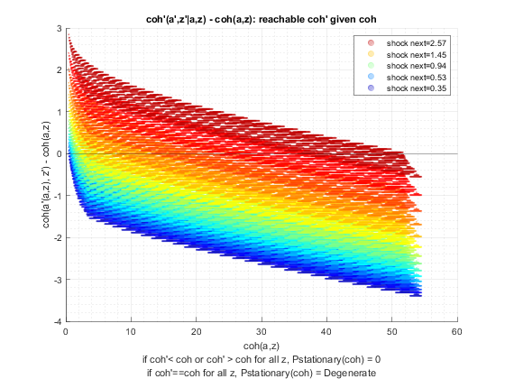
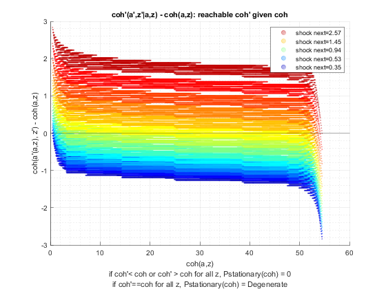

Test Preference (Savings Distribution)
back to Fan's Dynamic Assets Repository Table of Content.
Testing the ff_az_ds_vecsv program for solving the savings only dynamic programming problem.
defaults in ffs_az_set_default_param.m are:
- param_map('fl_beta') = 0.94;
- param_map('fl_crra') = 1.5;
here test three levels of discount:
- 0.87
- 0.925
- 0.97
for each shock, thest at these crra levels
- log (1)
- 1.5
- 2.0
@seealso
- PREFERENCE: savings only quick vs benchmark testing: fsi_az_ds_vecsv_pref
- SHOCK: savings only asset grid count testing: fsi_az_ds_vecsv_shock
Contents
Set Shared Parameters
close all; clear all; ar_fl_beta = [0.87, 0.925, 0.97]; ar_fl_crra = [1, 1.5, 2.0]; it_a_n = 750; it_z_n = 15;
Simulate Model with Discount = 0.87
for fl_crra = ar_fl_crra disp('xxxxxxxxxxxxxxxxxxxxxxxxxxx'); disp('xxxxxxxxxxxxxxxxxxxxxxxxxxx'); disp(['fl_beta = ' num2str(ar_fl_beta(1))]); disp(['fl_crra = ' num2str(fl_crra)]); disp('xxxxxxxxxxxxxxxxxxxxxxxxxxx'); disp('xxxxxxxxxxxxxxxxxxxxxxxxxxx'); disp(''); disp(''); disp(''); disp(''); % Call Default Parameters <https://fanwangecon.github.io/CodeDynaAsset/m_az/paramfunc/html/ffs_az_set_default_param.html ffs_az_set_default_param> bl_input_override = true; it_param_set = 9; [param_map, support_map] = ffs_az_set_default_param(it_param_set); % Simulation Accuracy param_map('it_a_n') = it_a_n; param_map('it_z_n') = it_z_n; param_map('fl_beta') = ar_fl_beta(1); param_map('fl_crra') = fl_crra; % Display Parameters support_map('bl_display') = false; support_map('bl_display_final') = false; support_map('bl_time') = true; support_map('bl_profile') = false; support_map('bl_graph_coh_t_coh') = true; % Call Grid Generator <https://fanwangecon.github.io/CodeDynaAsset/m_az/paramfunc/html/ffs_az_get_funcgrid.html ffs_az_get_funcgrid> [armt_map, func_map] = ffs_az_get_funcgrid(param_map, support_map, bl_input_override); % Call Dynamic Programming Problem <https://fanwangecon.github.io/CodeDynaAsset/m_az/solve/html/ff_az_vf_vecsv.html ff_az_vf_vecsv> result_map = ff_az_vf_vecsv(param_map, support_map, armt_map, func_map); % Call Distribution CProgram result_map = ff_az_ds_vecsv(param_map, support_map, armt_map, func_map, result_map, bl_input_override); % Snap snapnow; end % close all close all;
xxxxxxxxxxxxxxxxxxxxxxxxxxx
xxxxxxxxxxxxxxxxxxxxxxxxxxx
fl_beta = 0.87
fl_crra = 1
xxxxxxxxxxxxxxxxxxxxxxxxxxx
xxxxxxxxxxxxxxxxxxxxxxxxxxx
Elapsed time is 0.626240 seconds.
Elapsed time is 0.182642 seconds.
"tb_prob_drv, Percentiles of Y, …" "cl_mt_pol_a"
percentiles cl_mt_pol_aPercentileValues fracOfSumHeldBelowThisPercentile
___________ ___________________________ ________________________________
0.1 0 0
1 0 0
5 0 0
10 0 0
15 0 0
20 0 0
25 0 0
35 0 0
50 0 0
65 0 0
75 0 0
80 0 0
85 0 0
90 0 0
95 0.066756 0.18202
99 0.33378 0.62472
99.9 0.86782 0.95059
"tb_prob_drv, Percentiles of Y, …" "cl_mt_pol_coh"
percentiles cl_mt_pol_cohPercentileValues fracOfSumHeldBelowThisPercentile
___________ _____________________________ ________________________________
0.1 0.44468 0.00092996
1 0.59175 0.012136
5 0.68262 0.033709
10 0.78744 0.079792
15 0.90837 0.16227
20 0.90837 0.16227
25 0.90837 0.16227
35 1.0479 0.2858
50 1.2088 0.44003
65 1.3944 0.59952
75 1.6085 0.73585
80 1.6085 0.73585
85 1.7454 0.75243
90 1.8555 0.83382
95 2.1405 0.90033
99 2.9168 0.97638
99.9 3.7648 0.99727
"tb_prob_drv, Percentiles of Y, …" "cl_mt_pol_c"
percentiles cl_mt_pol_cPercentileValues fracOfSumHeldBelowThisPercentile
___________ ___________________________ ________________________________
0.1 0.44468 0.00094082
1 0.59175 0.012278
5 0.68262 0.034103
10 0.78744 0.080724
15 0.90837 0.16416
20 0.90837 0.16416
25 0.90837 0.16416
35 1.0479 0.28914
50 1.2088 0.44518
65 1.3944 0.6067
75 1.6085 0.74521
80 1.6085 0.74521
85 1.6786 0.76129
90 1.8555 0.8457
95 2.0737 0.91168
99 2.6227 0.97854
99.9 2.962 0.9977
tb_outcomes_meansdperc: mean, sd, percentiles
mean sd coefofvar min max pYis0 pYisMINY pYisMAXY p0_1 p1 p5 p10 p15 p20 p25 p35 p50 p65 p75 p80 p85 p90 p95 p99 p99_9
________ ________ _________ _______ ______ _______ _________ _________ _______ _______ _______ _______ _______ _______ _______ ______ ______ ______ ______ ______ ______ ______ ________ _______ _______
cl_mt_pol_a 0.014958 0.070101 4.6866 0 43.725 0.91332 0.91332 -7.33e-35 0 0 0 0 0 0 0 0 0 0 0 0 0 0 0.066756 0.33378 0.86782
cl_mt_pol_coh 1.2953 0.47883 0.36966 0.44468 54.536 0 0.0027089 -7.33e-35 0.44468 0.59175 0.68262 0.78744 0.90837 0.90837 0.90837 1.0479 1.2088 1.3944 1.6085 1.6085 1.7454 1.8555 2.1405 2.9168 3.7648
cl_mt_pol_c 1.2804 0.43668 0.34106 0.44468 10.811 0 0.0027089 -7.33e-35 0.44468 0.59175 0.68262 0.78744 0.90837 0.90837 0.90837 1.0479 1.2088 1.3944 1.6085 1.6085 1.6786 1.8555 2.0737 2.6227 2.962
tb_outcomes_fracheld: fraction of asset/income/etc held by hh up to this percentile
fracByP0_1 fracByP1 fracByP5 fracByP10 fracByP15 fracByP20 fracByP25 fracByP35 fracByP50 fracByP65 fracByP75 fracByP80 fracByP85 fracByP90 fracByP95 fracByP99 fracByP99_9
__________ ________ ________ _________ _________ _________ _________ _________ _________ _________ _________ _________ _________ _________ _________ _________ ___________
cl_mt_pol_a 0 0 0 0 0 0 0 0 0 0 0 0 0 0 0.18202 0.62472 0.95059
cl_mt_pol_coh 0.00092996 0.012136 0.033709 0.079792 0.16227 0.16227 0.16227 0.2858 0.44003 0.59952 0.73585 0.73585 0.75243 0.83382 0.90033 0.97638 0.99727
cl_mt_pol_c 0.00094082 0.012278 0.034103 0.080724 0.16416 0.16416 0.16416 0.28914 0.44518 0.6067 0.74521 0.74521 0.76129 0.8457 0.91168 0.97854 0.9977


xxxxxxxxxxxxxxxxxxxxxxxxxxx
xxxxxxxxxxxxxxxxxxxxxxxxxxx
fl_beta = 0.87
fl_crra = 1.5
xxxxxxxxxxxxxxxxxxxxxxxxxxx
xxxxxxxxxxxxxxxxxxxxxxxxxxx
Elapsed time is 0.875227 seconds.
Elapsed time is 0.091311 seconds.
"tb_prob_drv, Percentiles of Y, …" "cl_mt_pol_a"
percentiles cl_mt_pol_aPercentileValues fracOfSumHeldBelowThisPercentile
___________ ___________________________ ________________________________
0.1 0 0
1 0 0
5 0 0
10 0 0
15 0 0
20 0 0
25 0 0
35 0 0
50 0 0
65 0 0
75 0.066756 0.052537
80 0.066756 0.052537
85 0.13351 0.12124
90 0.26702 0.27055
95 0.46729 0.4437
99 1.2016 0.81087
99.9 2.2029 0.97399
"tb_prob_drv, Percentiles of Y, …" "cl_mt_pol_coh"
percentiles cl_mt_pol_cohPercentileValues fracOfSumHeldBelowThisPercentile
___________ _____________________________ ________________________________
0.1 0.44468 0.00088039
1 0.59175 0.011457
5 0.68262 0.031709
10 0.78744 0.074569
15 0.90837 0.14995
20 0.90837 0.14995
25 0.90837 0.14995
35 1.0479 0.2603
50 1.2088 0.39277
65 1.3944 0.52445
75 1.6085 0.64214
80 1.677 0.66567
85 1.8555 0.73528
90 2.1292 0.80259
95 2.5376 0.88599
99 3.564 0.97008
99.9 4.8641 0.9962
"tb_prob_drv, Percentiles of Y, …" "cl_mt_pol_c"
percentiles cl_mt_pol_cPercentileValues fracOfSumHeldBelowThisPercentile
___________ ___________________________ ________________________________
0.1 0.44468 0.00093789
1 0.59175 0.012205
5 0.68262 0.033781
10 0.78744 0.079445
15 0.90837 0.15979
20 0.90837 0.15979
25 0.90837 0.15979
35 1.0479 0.27786
50 1.2088 0.4201
65 1.3944 0.56515
75 1.6085 0.69888
80 1.6102 0.71783
85 1.7888 0.8052
90 1.8606 0.84629
95 2.0124 0.91205
99 2.3992 0.97989
99.9 2.7801 0.99787
tb_outcomes_meansdperc: mean, sd, percentiles
mean sd coefofvar min max pYis0 pYisMINY pYisMAXY p0_1 p1 p5 p10 p15 p20 p25 p35 p50 p65 p75 p80 p85 p90 p95 p99 p99_9
________ _______ _________ _______ ______ _______ _________ __________ _______ _______ _______ _______ _______ _______ _______ ______ ______ ______ ________ ________ _______ _______ _______ ______ ______
cl_mt_pol_a 0.083735 0.23518 2.8087 0 45.995 0.74808 0.74808 3.4466e-36 0 0 0 0 0 0 0 0 0 0 0.066756 0.066756 0.13351 0.26702 0.46729 1.2016 2.2029
cl_mt_pol_coh 1.3658 0.6001 0.43937 0.44468 54.536 0 0.0027041 3.4466e-36 0.44468 0.59175 0.68262 0.78744 0.90837 0.90837 0.90837 1.0479 1.2088 1.3944 1.6085 1.677 1.8555 2.1292 2.5376 3.564 4.8641
cl_mt_pol_c 1.2821 0.41818 0.32617 0.44468 8.5411 0 0.0027041 3.4466e-36 0.44468 0.59175 0.68262 0.78744 0.90837 0.90837 0.90837 1.0479 1.2088 1.3944 1.6085 1.6102 1.7888 1.8606 2.0124 2.3992 2.7801
tb_outcomes_fracheld: fraction of asset/income/etc held by hh up to this percentile
fracByP0_1 fracByP1 fracByP5 fracByP10 fracByP15 fracByP20 fracByP25 fracByP35 fracByP50 fracByP65 fracByP75 fracByP80 fracByP85 fracByP90 fracByP95 fracByP99 fracByP99_9
__________ ________ ________ _________ _________ _________ _________ _________ _________ _________ _________ _________ _________ _________ _________ _________ ___________
cl_mt_pol_a 0 0 0 0 0 0 0 0 0 0 0.052537 0.052537 0.12124 0.27055 0.4437 0.81087 0.97399
cl_mt_pol_coh 0.00088039 0.011457 0.031709 0.074569 0.14995 0.14995 0.14995 0.2603 0.39277 0.52445 0.64214 0.66567 0.73528 0.80259 0.88599 0.97008 0.9962
cl_mt_pol_c 0.00093789 0.012205 0.033781 0.079445 0.15979 0.15979 0.15979 0.27786 0.4201 0.56515 0.69888 0.71783 0.8052 0.84629 0.91205 0.97989 0.99787
 
xxxxxxxxxxxxxxxxxxxxxxxxxxx
xxxxxxxxxxxxxxxxxxxxxxxxxxx
fl_beta = 0.87
fl_crra = 2
xxxxxxxxxxxxxxxxxxxxxxxxxxx
xxxxxxxxxxxxxxxxxxxxxxxxxxx
Elapsed time is 0.753701 seconds.
Elapsed time is 0.082902 seconds.
"tb_prob_drv, Percentiles of Y, …" "cl_mt_pol_a"
percentiles cl_mt_pol_aPercentileValues fracOfSumHeldBelowThisPercentile
___________ ___________________________ ________________________________
0.1 0 0
1 0 0
5 0 0
10 0 0
15 0 0
20 0 0
25 0 0
35 0 0
50 0 0
65 0.13351 0.069086
75 0.20027 0.11448
80 0.33378 0.19787
85 0.46729 0.28728
90 0.66756 0.40254
95 1.1348 0.62414
99 2.1362 0.87218
99.9 3.5381 0.98304
"tb_prob_drv, Percentiles of Y, …" "cl_mt_pol_coh"
percentiles cl_mt_pol_cohPercentileValues fracOfSumHeldBelowThisPercentile
___________ _____________________________ ________________________________
0.1 0.44468 0.00078993
1 0.59175 0.010152
5 0.68262 0.027728
10 0.78744 0.063935
15 0.90837 0.1253
20 0.90837 0.1253
25 1.0479 0.21269
35 1.0479 0.21269
50 1.2772 0.33273
65 1.5313 0.46456
75 1.7562 0.57404
80 1.9418 0.63724
85 2.1559 0.70756
90 2.4826 0.78386
95 3.03 0.87103
99 4.3985 0.96591
99.9 6.0957 0.99565
"tb_prob_drv, Percentiles of Y, …" "cl_mt_pol_c"
percentiles cl_mt_pol_cPercentileValues fracOfSumHeldBelowThisPercentile
___________ ___________________________ ________________________________
0.1 0.44468 0.00092202
1 0.59175 0.011852
5 0.68262 0.032378
10 0.78744 0.074684
15 0.90837 0.14662
20 0.90837 0.14662
25 1.0452 0.15792
35 1.0479 0.25159
50 1.2088 0.379
65 1.3961 0.53493
75 1.5429 0.64797
80 1.6152 0.70973
85 1.7237 0.78205
90 1.8021 0.84223
95 1.9586 0.91669
99 2.319 0.98111
99.9 2.6049 0.99789
tb_outcomes_meansdperc: mean, sd, percentiles
mean sd coefofvar min max pYis0 pYisMINY pYisMAXY p0_1 p1 p5 p10 p15 p20 p25 p35 p50 p65 p75 p80 p85 p90 p95 p99 p99_9
_______ _______ _________ _______ ______ _______ _________ __________ _______ _______ _______ _______ _______ _______ ______ ______ ______ _______ _______ _______ _______ _______ ______ ______ ______
cl_mt_pol_a 0.21493 0.44085 2.0511 0 47.263 0.55587 0.55587 -8.771e-36 0 0 0 0 0 0 0 0 0 0.13351 0.20027 0.33378 0.46729 0.66756 1.1348 2.1362 3.5381
cl_mt_pol_coh 1.5003 0.77889 0.51916 0.44468 54.536 0 0.0026651 -8.771e-36 0.44468 0.59175 0.68262 0.78744 0.90837 0.90837 1.0479 1.0479 1.2772 1.5313 1.7562 1.9418 2.1559 2.4826 3.03 4.3985 6.0957
cl_mt_pol_c 1.2854 0.39701 0.30887 0.44468 7.2728 0 0.0026651 -8.771e-36 0.44468 0.59175 0.68262 0.78744 0.90837 0.90837 1.0452 1.0479 1.2088 1.3961 1.5429 1.6152 1.7237 1.8021 1.9586 2.319 2.6049
tb_outcomes_fracheld: fraction of asset/income/etc held by hh up to this percentile
fracByP0_1 fracByP1 fracByP5 fracByP10 fracByP15 fracByP20 fracByP25 fracByP35 fracByP50 fracByP65 fracByP75 fracByP80 fracByP85 fracByP90 fracByP95 fracByP99 fracByP99_9
__________ ________ ________ _________ _________ _________ _________ _________ _________ _________ _________ _________ _________ _________ _________ _________ ___________
cl_mt_pol_a 0 0 0 0 0 0 0 0 0 0.069086 0.11448 0.19787 0.28728 0.40254 0.62414 0.87218 0.98304
cl_mt_pol_coh 0.00078993 0.010152 0.027728 0.063935 0.1253 0.1253 0.21269 0.21269 0.33273 0.46456 0.57404 0.63724 0.70756 0.78386 0.87103 0.96591 0.99565
cl_mt_pol_c 0.00092202 0.011852 0.032378 0.074684 0.14662 0.14662 0.15792 0.25159 0.379 0.53493 0.64797 0.70973 0.78205 0.84223 0.91669 0.98111 0.99789


Simulate Model with Discount = 0.925
close all for fl_crra = ar_fl_crra disp('xxxxxxxxxxxxxxxxxxxxxxxxxxx'); disp('xxxxxxxxxxxxxxxxxxxxxxxxxxx'); disp(['fl_beta = ' num2str(ar_fl_beta(2))]); disp(['fl_crra = ' num2str(fl_crra)]); disp('xxxxxxxxxxxxxxxxxxxxxxxxxxx'); disp('xxxxxxxxxxxxxxxxxxxxxxxxxxx'); disp(''); disp(''); disp(''); disp(''); % Call Default Parameters <https://fanwangecon.github.io/CodeDynaAsset/m_az/paramfunc/html/ffs_az_set_default_param.html ffs_az_set_default_param> bl_input_override = true; it_param_set = 9; [param_map, support_map] = ffs_az_set_default_param(it_param_set); % Simulation Accuracy param_map('it_a_n') = it_a_n; param_map('it_z_n') = it_z_n; param_map('fl_beta') = ar_fl_beta(2); param_map('fl_crra') = fl_crra; % Display Parameters support_map('bl_display') = false; support_map('bl_display_final') = false; support_map('bl_time') = true; support_map('bl_profile') = false; support_map('bl_graph_coh_t_coh') = true; % Call Grid Generator <https://fanwangecon.github.io/CodeDynaAsset/m_az/paramfunc/html/ffs_az_get_funcgrid.html ffs_az_get_funcgrid> [armt_map, func_map] = ffs_az_get_funcgrid(param_map, support_map, bl_input_override); % Call Dynamic Programming Problem <https://fanwangecon.github.io/CodeDynaAsset/m_az/solve/html/ff_az_vf_vecsv.html ff_az_vf_vecsv> result_map = ff_az_vf_vecsv(param_map, support_map, armt_map, func_map); % Call Distribution CProgram result_map = ff_az_ds_vecsv(param_map, support_map, armt_map, func_map, result_map, bl_input_override); % Snap snapnow; end % close all close all;
xxxxxxxxxxxxxxxxxxxxxxxxxxx
xxxxxxxxxxxxxxxxxxxxxxxxxxx
fl_beta = 0.925
fl_crra = 1
xxxxxxxxxxxxxxxxxxxxxxxxxxx
xxxxxxxxxxxxxxxxxxxxxxxxxxx
Elapsed time is 0.801759 seconds.
Elapsed time is 0.078387 seconds.
"tb_prob_drv, Percentiles of Y, …" "cl_mt_pol_a"
percentiles cl_mt_pol_aPercentileValues fracOfSumHeldBelowThisPercentile
___________ ___________________________ ________________________________
0.1 0 0
1 0 0
5 0 0
10 0 0
15 0 0
20 0 0
25 0 0
35 0 0
50 0 0
65 0.066756 0.035968
75 0.20027 0.11355
80 0.26702 0.17134
85 0.40053 0.25784
90 0.6008 0.3814
95 1.0013 0.57188
99 2.0694 0.85843
99.9 3.5381 0.98073
"tb_prob_drv, Percentiles of Y, …" "cl_mt_pol_coh"
percentiles cl_mt_pol_cohPercentileValues fracOfSumHeldBelowThisPercentile
___________ _____________________________ ________________________________
0.1 0.44468 0.00080872
1 0.59175 0.010439
5 0.68262 0.028637
10 0.78744 0.066429
15 0.90837 0.13104
20 0.90837 0.13104
25 0.97679 0.13606
35 1.0479 0.22274
50 1.2088 0.3285
65 1.4825 0.4699
75 1.7365 0.57989
80 1.8822 0.64296
85 2.0875 0.70606
90 2.4142 0.78588
95 2.9616 0.8739
99 4.3188 0.9657
99.9 6.0407 0.99551
"tb_prob_drv, Percentiles of Y, …" "cl_mt_pol_c"
percentiles cl_mt_pol_cPercentileValues fracOfSumHeldBelowThisPercentile
___________ ___________________________ ________________________________
0.1 0.44468 0.00092709
1 0.59175 0.011968
5 0.68262 0.032837
10 0.78744 0.07619
15 0.90837 0.15041
20 0.90837 0.15041
25 0.97679 0.15664
35 1.0479 0.25751
50 1.2088 0.38504
65 1.3961 0.54561
75 1.5418 0.64993
80 1.6147 0.70869
85 1.7237 0.78355
90 1.8005 0.84135
95 1.9573 0.91577
99 2.319 0.98099
99.9 2.6015 0.99793
tb_outcomes_meansdperc: mean, sd, percentiles
mean sd coefofvar min max pYis0 pYisMINY pYisMAXY p0_1 p1 p5 p10 p15 p20 p25 p35 p50 p65 p75 p80 p85 p90 p95 p99 p99_9
_______ _______ _________ _______ ______ _______ _________ ___________ _______ _______ _______ _______ _______ _______ _______ ______ ______ ________ _______ _______ _______ ______ ______ ______ ______
cl_mt_pol_a 0.18804 0.41746 2.2201 0 47.53 0.58398 0.58398 -4.0408e-34 0 0 0 0 0 0 0 0 0 0.066756 0.20027 0.26702 0.40053 0.6008 1.0013 2.0694 3.5381
cl_mt_pol_coh 1.4727 0.75572 0.51314 0.44468 54.536 0 0.0026784 -4.0408e-34 0.44468 0.59175 0.68262 0.78744 0.90837 0.90837 0.97679 1.0479 1.2088 1.4825 1.7365 1.8822 2.0875 2.4142 2.9616 4.3188 6.0407
cl_mt_pol_c 1.2847 0.40033 0.31162 0.44468 7.0058 0 0.0026784 -4.0408e-34 0.44468 0.59175 0.68262 0.78744 0.90837 0.90837 0.97679 1.0479 1.2088 1.3961 1.5418 1.6147 1.7237 1.8005 1.9573 2.319 2.6015
tb_outcomes_fracheld: fraction of asset/income/etc held by hh up to this percentile
fracByP0_1 fracByP1 fracByP5 fracByP10 fracByP15 fracByP20 fracByP25 fracByP35 fracByP50 fracByP65 fracByP75 fracByP80 fracByP85 fracByP90 fracByP95 fracByP99 fracByP99_9
__________ ________ ________ _________ _________ _________ _________ _________ _________ _________ _________ _________ _________ _________ _________ _________ ___________
cl_mt_pol_a 0 0 0 0 0 0 0 0 0 0.035968 0.11355 0.17134 0.25784 0.3814 0.57188 0.85843 0.98073
cl_mt_pol_coh 0.00080872 0.010439 0.028637 0.066429 0.13104 0.13104 0.13606 0.22274 0.3285 0.4699 0.57989 0.64296 0.70606 0.78588 0.8739 0.9657 0.99551
cl_mt_pol_c 0.00092709 0.011968 0.032837 0.07619 0.15041 0.15041 0.15664 0.25751 0.38504 0.54561 0.64993 0.70869 0.78355 0.84135 0.91577 0.98099 0.99793


xxxxxxxxxxxxxxxxxxxxxxxxxxx
xxxxxxxxxxxxxxxxxxxxxxxxxxx
fl_beta = 0.925
fl_crra = 1.5
xxxxxxxxxxxxxxxxxxxxxxxxxxx
xxxxxxxxxxxxxxxxxxxxxxxxxxx
Elapsed time is 1.142410 seconds.
Elapsed time is 0.143987 seconds.
"tb_prob_drv, Percentiles of Y, …" "cl_mt_pol_a"
percentiles cl_mt_pol_aPercentileValues fracOfSumHeldBelowThisPercentile
___________ ___________________________ ________________________________
0.1 0 0
1 0 0
5 0 0
10 0 0
15 0 0
20 0 0
25 0 0
35 0 0
50 0.13351 0.031851
65 0.40053 0.13036
75 0.66756 0.22585
80 0.80107 0.28395
85 1.0681 0.38309
90 1.4686 0.51964
95 2.1362 0.68981
99 3.7383 0.90664
99.9 5.8077 0.98684
"tb_prob_drv, Percentiles of Y, …" "cl_mt_pol_coh"
percentiles cl_mt_pol_cohPercentileValues fracOfSumHeldBelowThisPercentile
___________ _____________________________ ________________________________
0.1 0.44468 0.00062521
1 0.59175 0.0078029
5 0.68262 0.020741
10 0.78744 0.046176
15 0.90837 0.08708
20 0.93387 0.088552
25 1.0479 0.14363
35 1.2088 0.20792
50 1.4584 0.29033
65 1.8049 0.42612
75 2.1667 0.53863
80 2.4164 0.60103
85 2.7451 0.67566
90 3.2219 0.75697
95 4.0034 0.85542
99 5.8926 0.96151
99.9 8.219 0.99494
"tb_prob_drv, Percentiles of Y, …" "cl_mt_pol_c"
percentiles cl_mt_pol_cPercentileValues fracOfSumHeldBelowThisPercentile
___________ ___________________________ ________________________________
0.1 0.44468 0.00086244
1 0.59175 0.010775
5 0.68262 0.02867
10 0.78744 0.06392
15 0.90837 0.12151
20 0.92429 0.1234
25 1.0479 0.20669
35 1.1196 0.24747
50 1.2822 0.39099
65 1.4291 0.54368
75 1.5501 0.65828
80 1.6269 0.7204
85 1.6686 0.78524
90 1.7537 0.84892
95 1.9123 0.9195
99 2.1893 0.98203
99.9 2.4809 0.99804
tb_outcomes_meansdperc: mean, sd, percentiles
mean sd coefofvar min max pYis0 pYisMINY pYisMAXY p0_1 p1 p5 p10 p15 p20 p25 p35 p50 p65 p75 p80 p85 p90 p95 p99 p99_9
_______ _______ _________ _______ ______ _______ _________ ___________ _______ _______ _______ _______ _______ _______ ______ ______ _______ _______ _______ _______ ______ ______ ______ ______ ______
cl_mt_pol_a 0.49033 0.79674 1.6249 0 48.732 0.35663 0.35663 5.0021e-38 0 0 0 0 0 0 0 0 0.13351 0.40053 0.66756 0.80107 1.0681 1.4686 2.1362 3.7383 5.8077
cl_mt_pol_coh 1.7826 1.1056 0.62019 0.44468 54.536 0 0.0025063 -1.2936e-37 0.44468 0.59175 0.68262 0.78744 0.90837 0.93387 1.0479 1.2088 1.4584 1.8049 2.1667 2.4164 2.7451 3.2219 4.0034 5.8926 8.219
cl_mt_pol_c 1.2923 0.36845 0.28512 0.44468 5.8042 0 0.0025063 -1.2936e-37 0.44468 0.59175 0.68262 0.78744 0.90837 0.92429 1.0479 1.1196 1.2822 1.4291 1.5501 1.6269 1.6686 1.7537 1.9123 2.1893 2.4809
tb_outcomes_fracheld: fraction of asset/income/etc held by hh up to this percentile
fracByP0_1 fracByP1 fracByP5 fracByP10 fracByP15 fracByP20 fracByP25 fracByP35 fracByP50 fracByP65 fracByP75 fracByP80 fracByP85 fracByP90 fracByP95 fracByP99 fracByP99_9
__________ _________ ________ _________ _________ _________ _________ _________ _________ _________ _________ _________ _________ _________ _________ _________ ___________
cl_mt_pol_a 0 0 0 0 0 0 0 0 0.031851 0.13036 0.22585 0.28395 0.38309 0.51964 0.68981 0.90664 0.98684
cl_mt_pol_coh 0.00062521 0.0078029 0.020741 0.046176 0.08708 0.088552 0.14363 0.20792 0.29033 0.42612 0.53863 0.60103 0.67566 0.75697 0.85542 0.96151 0.99494
cl_mt_pol_c 0.00086244 0.010775 0.02867 0.06392 0.12151 0.1234 0.20669 0.24747 0.39099 0.54368 0.65828 0.7204 0.78524 0.84892 0.9195 0.98203 0.99804


xxxxxxxxxxxxxxxxxxxxxxxxxxx
xxxxxxxxxxxxxxxxxxxxxxxxxxx
fl_beta = 0.925
fl_crra = 2
xxxxxxxxxxxxxxxxxxxxxxxxxxx
xxxxxxxxxxxxxxxxxxxxxxxxxxx
Elapsed time is 1.116569 seconds.
Elapsed time is 0.143098 seconds.
"tb_prob_drv, Percentiles of Y, …" "cl_mt_pol_a"
percentiles cl_mt_pol_aPercentileValues fracOfSumHeldBelowThisPercentile
___________ ___________________________ ________________________________
0.1 0 0
1 0 0
5 0 0
10 0 0
15 0 0
20 0.066756 0.0078196
25 0.066756 0.0078196
35 0.13351 0.016469
50 0.40053 0.07004
65 0.80107 0.17576
75 1.2016 0.29556
80 1.4686 0.37156
85 1.8024 0.45707
90 2.3364 0.58489
95 3.2043 0.73771
99 5.2737 0.92678
99.9 7.8772 0.99007
"tb_prob_drv, Percentiles of Y, …" "cl_mt_pol_coh"
percentiles cl_mt_pol_cohPercentileValues fracOfSumHeldBelowThisPercentile
___________ _____________________________ ________________________________
0.1 0.44468 0.0004562
1 0.59175 0.0054368
5 0.75104 0.015417
10 0.85587 0.033845
15 0.92429 0.054832
20 1.0479 0.086326
25 1.1163 0.10345
35 1.3456 0.1652
50 1.7321 0.26869
65 2.2244 0.40596
75 2.7033 0.51687
80 3.0366 0.58377
85 3.456 0.66037
90 4.0585 0.74553
95 5.0828 0.85014
99 7.3473 0.96011
99.9 10.201 0.99481
"tb_prob_drv, Percentiles of Y, …" "cl_mt_pol_c"
percentiles cl_mt_pol_cPercentileValues fracOfSumHeldBelowThisPercentile
___________ ___________________________ ________________________________
0.1 0.44468 0.00075584
1 0.59175 0.0090376
5 0.75104 0.026063
10 0.85587 0.058562
15 0.90837 0.093897
20 1.0469 0.1294
25 1.0495 0.1834
35 1.142 0.25194
50 1.2906 0.39399
65 1.4178 0.55527
75 1.5268 0.66518
80 1.5936 0.72498
85 1.6636 0.78831
90 1.7537 0.85333
95 1.8689 0.92228
99 2.1305 0.98281
99.9 2.4045 0.99811
tb_outcomes_meansdperc: mean, sd, percentiles
mean sd coefofvar min max pYis0 pYisMINY pYisMAXY p0_1 p1 p5 p10 p15 p20 p25 p35 p50 p65 p75 p80 p85 p90 p95 p99 p99_9
_______ _______ _________ _______ ______ _______ ________ ___________ _______ _______ _______ _______ _______ ________ ________ _______ _______ _______ ______ ______ ______ ______ ______ ______ ______
cl_mt_pol_a 0.85479 1.1526 1.3484 0 49.466 0.19854 0.19854 -1.5768e-34 0 0 0 0 0 0.066756 0.066756 0.13351 0.40053 0.80107 1.2016 1.4686 1.8024 2.3364 3.2043 5.2737 7.8772
cl_mt_pol_coh 2.1562 1.4449 0.67013 0.44468 54.536 0 0.002212 -1.5768e-34 0.44468 0.59175 0.75104 0.85587 0.92429 1.0479 1.1163 1.3456 1.7321 2.2244 2.7033 3.0366 3.456 4.0585 5.0828 7.3473 10.201
cl_mt_pol_c 1.3014 0.34465 0.26483 0.44468 5.0698 0 0.002212 -1.5768e-34 0.44468 0.59175 0.75104 0.85587 0.90837 1.0469 1.0495 1.142 1.2906 1.4178 1.5268 1.5936 1.6636 1.7537 1.8689 2.1305 2.4045
tb_outcomes_fracheld: fraction of asset/income/etc held by hh up to this percentile
fracByP0_1 fracByP1 fracByP5 fracByP10 fracByP15 fracByP20 fracByP25 fracByP35 fracByP50 fracByP65 fracByP75 fracByP80 fracByP85 fracByP90 fracByP95 fracByP99 fracByP99_9
__________ _________ ________ _________ _________ _________ _________ _________ _________ _________ _________ _________ _________ _________ _________ _________ ___________
cl_mt_pol_a 0 0 0 0 0 0.0078196 0.0078196 0.016469 0.07004 0.17576 0.29556 0.37156 0.45707 0.58489 0.73771 0.92678 0.99007
cl_mt_pol_coh 0.0004562 0.0054368 0.015417 0.033845 0.054832 0.086326 0.10345 0.1652 0.26869 0.40596 0.51687 0.58377 0.66037 0.74553 0.85014 0.96011 0.99481
cl_mt_pol_c 0.00075584 0.0090376 0.026063 0.058562 0.093897 0.1294 0.1834 0.25194 0.39399 0.55527 0.66518 0.72498 0.78831 0.85333 0.92228 0.98281 0.99811
 
Simulate Model with Discount = 0.97
close all for fl_crra = ar_fl_crra disp('xxxxxxxxxxxxxxxxxxxxxxxxxxx'); disp('xxxxxxxxxxxxxxxxxxxxxxxxxxx'); disp(['fl_beta = ' num2str(ar_fl_beta(3))]); disp(['fl_crra = ' num2str(fl_crra)]); disp('xxxxxxxxxxxxxxxxxxxxxxxxxxx'); disp('xxxxxxxxxxxxxxxxxxxxxxxxxxx'); disp(''); disp(''); disp(''); disp(''); % Call Default Parameters <https://fanwangecon.github.io/CodeDynaAsset/m_az/paramfunc/html/ffs_az_set_default_param.html ffs_az_set_default_param> bl_input_override = true; it_param_set = 9; [param_map, support_map] = ffs_az_set_default_param(it_param_set); % Simulation Accuracy param_map('it_a_n') = it_a_n; param_map('it_z_n') = it_z_n; param_map('fl_beta') = ar_fl_beta(3); param_map('fl_crra') = fl_crra; % Display Parameters support_map('bl_display') = false; support_map('bl_display_final') = false; support_map('bl_time') = true; support_map('bl_profile') = false; support_map('bl_graph_coh_t_coh') = true; % Call Grid Generator <https://fanwangecon.github.io/CodeDynaAsset/m_az/paramfunc/html/ffs_az_get_funcgrid.html ffs_az_get_funcgrid> [armt_map, func_map] = ffs_az_get_funcgrid(param_map, support_map, bl_input_override); % Call Dynamic Programming Problem <https://fanwangecon.github.io/CodeDynaAsset/m_az/solve/html/ff_az_vf_vecsv.html ff_az_vf_vecsv> result_map = ff_az_vf_vecsv(param_map, support_map, armt_map, func_map); % Call Distribution CProgram result_map = ff_az_ds_vecsv(param_map, support_map, armt_map, func_map, result_map, bl_input_override); % Snap snapnow; end % close all close all; clear all;
xxxxxxxxxxxxxxxxxxxxxxxxxxx
xxxxxxxxxxxxxxxxxxxxxxxxxxx
fl_beta = 0.97
fl_crra = 1
xxxxxxxxxxxxxxxxxxxxxxxxxxx
xxxxxxxxxxxxxxxxxxxxxxxxxxx
Elapsed time is 2.288987 seconds.
Elapsed time is 0.186551 seconds.
"tb_prob_drv, Percentiles of Y, …" "cl_mt_pol_a"
percentiles cl_mt_pol_aPercentileValues fracOfSumHeldBelowThisPercentile
___________ ___________________________ ________________________________
0.1 0 0
1 0 0
5 0 0
10 0.13351 0.00089503
15 0.40053 0.0056551
20 0.6008 0.011761
25 0.86782 0.022573
35 1.4686 0.055557
50 2.6035 0.14401
65 4.0053 0.27993
75 5.2069 0.40484
80 6.008 0.48207
85 7.0761 0.57311
90 8.4112 0.67888
95 10.681 0.81017
99 15.554 0.95009
99.9 21.762 0.99334
"tb_prob_drv, Percentiles of Y, …" "cl_mt_pol_coh"
percentiles cl_mt_pol_cohPercentileValues fracOfSumHeldBelowThisPercentile
___________ _____________________________ ________________________________
0.1 0.51297 0.00031062
1 0.68262 0.0023604
5 0.90837 0.0085465
10 1.198 0.018288
15 1.4717 0.032053
20 1.7774 0.048023
25 2.0875 0.067936
35 2.7718 0.1171
50 3.9458 0.21811
65 5.4403 0.35845
75 6.7724 0.48112
80 7.6166 0.55393
85 8.7114 0.63586
90 10.146 0.73014
95 12.488 0.84281
99 17.525 0.95897
99.9 23.975 0.99465
"tb_prob_drv, Percentiles of Y, …" "cl_mt_pol_c"
percentiles cl_mt_pol_cPercentileValues fracOfSumHeldBelowThisPercentile
___________ ___________________________ ________________________________
0.1 0.51297 0.0011247
1 0.66017 0.0042113
5 0.89624 0.027016
10 1.039 0.06185
15 1.0895 0.10079
20 1.142 0.14206
25 1.2081 0.18529
35 1.2798 0.27495
50 1.3794 0.42049
65 1.4812 0.57741
75 1.5492 0.68748
80 1.6019 0.74486
85 1.6519 0.80382
90 1.7099 0.86505
95 1.8172 0.92959
99 2.0119 0.98461
99.9 2.2427 0.9983
tb_outcomes_meansdperc: mean, sd, percentiles
mean sd coefofvar min max pYis0 pYisMINY pYisMAXY p0_1 p1 p5 p10 p15 p20 p25 p35 p50 p65 p75 p80 p85 p90 p95 p99 p99_9
______ _______ _________ _______ ______ _______ _________ __________ _______ _______ _______ _______ _______ ______ _______ ______ ______ ______ ______ ______ ______ ______ ______ ______ ______
cl_mt_pol_a 3.5901 3.5427 0.98681 0 50 0.06711 0.06711 3.7744e-10 0 0 0 0.13351 0.40053 0.6008 0.86782 1.4686 2.6035 4.0053 5.2069 6.008 7.0761 8.4112 10.681 15.554 21.762
cl_mt_pol_coh 4.9598 3.7889 0.76393 0.44468 54.536 0 0.0009622 3.1723e-11 0.51297 0.68262 0.90837 1.198 1.4717 1.7774 2.0875 2.7718 3.9458 5.4403 6.7724 7.6166 8.7114 10.146 12.488 17.525 23.975
cl_mt_pol_c 1.3698 0.28025 0.2046 0.44468 4.5358 0 0.0009622 3.1723e-11 0.51297 0.66017 0.89624 1.039 1.0895 1.142 1.2081 1.2798 1.3794 1.4812 1.5492 1.6019 1.6519 1.7099 1.8172 2.0119 2.2427
tb_outcomes_fracheld: fraction of asset/income/etc held by hh up to this percentile
fracByP0_1 fracByP1 fracByP5 fracByP10 fracByP15 fracByP20 fracByP25 fracByP35 fracByP50 fracByP65 fracByP75 fracByP80 fracByP85 fracByP90 fracByP95 fracByP99 fracByP99_9
__________ _________ _________ __________ _________ _________ _________ _________ _________ _________ _________ _________ _________ _________ _________ _________ ___________
cl_mt_pol_a 0 0 0 0.00089503 0.0056551 0.011761 0.022573 0.055557 0.14401 0.27993 0.40484 0.48207 0.57311 0.67888 0.81017 0.95009 0.99334
cl_mt_pol_coh 0.00031062 0.0023604 0.0085465 0.018288 0.032053 0.048023 0.067936 0.1171 0.21811 0.35845 0.48112 0.55393 0.63586 0.73014 0.84281 0.95897 0.99465
cl_mt_pol_c 0.0011247 0.0042113 0.027016 0.06185 0.10079 0.14206 0.18529 0.27495 0.42049 0.57741 0.68748 0.74486 0.80382 0.86505 0.92959 0.98461 0.9983

xxxxxxxxxxxxxxxxxxxxxxxxxxx
xxxxxxxxxxxxxxxxxxxxxxxxxxx
fl_beta = 0.97
fl_crra = 1.5
xxxxxxxxxxxxxxxxxxxxxxxxxxx
xxxxxxxxxxxxxxxxxxxxxxxxxxx
Elapsed time is 2.923035 seconds.
Elapsed time is 0.165940 seconds.
"tb_prob_drv, Percentiles of Y, …" "cl_mt_pol_a"
percentiles cl_mt_pol_aPercentileValues fracOfSumHeldBelowThisPercentile
___________ ___________________________ ________________________________
0.1 0 0
1 0 0
5 0.13351 0.00042546
10 0.53405 0.0041313
15 0.93458 0.011047
20 1.3351 0.021795
25 1.8024 0.037059
35 2.6702 0.078287
50 4.2056 0.1707
65 6.0748 0.31411
75 7.8104 0.44213
80 8.8785 0.52092
85 10.147 0.60597
90 11.949 0.70798
95 14.82 0.82864
99 20.961 0.95526
99.9 28.772 0.99411
"tb_prob_drv, Percentiles of Y, …" "cl_mt_pol_coh"
percentiles cl_mt_pol_cohPercentileValues fracOfSumHeldBelowThisPercentile
___________ _____________________________ ________________________________
0.1 0.51297 0.00013148
1 0.68262 0.00092583
5 1.1296 0.006643
10 1.5997 0.016531
15 2.0742 0.030098
20 2.5506 0.04724
25 3.0295 0.067609
35 3.988 0.11854
50 5.6323 0.22375
65 7.614 0.36799
75 9.393 0.492
80 10.488 0.56457
85 11.815 0.64604
90 13.693 0.73924
95 16.673 0.84931
99 23.012 0.96107
99.9 31.1 0.99497
"tb_prob_drv, Percentiles of Y, …" "cl_mt_pol_c"
percentiles cl_mt_pol_cPercentileValues fracOfSumHeldBelowThisPercentile
___________ ___________________________ ________________________________
0.1 0.51297 0.00063393
1 0.68262 0.0045937
5 0.968 0.028828
10 1.0619 0.065524
15 1.1463 0.10505
20 1.2041 0.14553
25 1.2422 0.18905
35 1.3216 0.27989
50 1.4183 0.42469
65 1.5159 0.57988
75 1.5952 0.68964
80 1.6331 0.74659
85 1.6877 0.80516
90 1.7595 0.86608
95 1.8589 0.92988
99 2.0683 0.98462
99.9 2.3223 0.99829
tb_outcomes_meansdperc: mean, sd, percentiles
mean sd coefofvar min max pYis0 pYisMINY pYisMAXY p0_1 p1 p5 p10 p15 p20 p25 p35 p50 p65 p75 p80 p85 p90 p95 p99 p99_9
______ _______ _________ _______ ______ ________ __________ __________ _______ _______ _______ _______ _______ ______ ______ ______ ______ ______ ______ ______ ______ ______ ______ ______ ______
cl_mt_pol_a 5.4081 4.7673 0.88152 0 50 0.025303 0.025303 1.2197e-07 0 0 0.13351 0.53405 0.93458 1.3351 1.8024 2.6702 4.2056 6.0748 7.8104 8.8785 10.147 11.949 14.82 20.961 28.772
cl_mt_pol_coh 6.8233 5.0167 0.73523 0.44468 54.536 0 0.00057637 6.7203e-09 0.51297 0.68262 1.1296 1.5997 2.0742 2.5506 3.0295 3.988 5.6323 7.614 9.393 10.488 11.815 13.693 16.673 23.012 31.1
cl_mt_pol_c 1.4152 0.27424 0.19378 0.44468 4.5358 0 0.00057637 6.7203e-09 0.51297 0.68262 0.968 1.0619 1.1463 1.2041 1.2422 1.3216 1.4183 1.5159 1.5952 1.6331 1.6877 1.7595 1.8589 2.0683 2.3223
tb_outcomes_fracheld: fraction of asset/income/etc held by hh up to this percentile
fracByP0_1 fracByP1 fracByP5 fracByP10 fracByP15 fracByP20 fracByP25 fracByP35 fracByP50 fracByP65 fracByP75 fracByP80 fracByP85 fracByP90 fracByP95 fracByP99 fracByP99_9
__________ __________ __________ _________ _________ _________ _________ _________ _________ _________ _________ _________ _________ _________ _________ _________ ___________
cl_mt_pol_a 0 0 0.00042546 0.0041313 0.011047 0.021795 0.037059 0.078287 0.1707 0.31411 0.44213 0.52092 0.60597 0.70798 0.82864 0.95526 0.99411
cl_mt_pol_coh 0.00013148 0.00092583 0.006643 0.016531 0.030098 0.04724 0.067609 0.11854 0.22375 0.36799 0.492 0.56457 0.64604 0.73924 0.84931 0.96107 0.99497
cl_mt_pol_c 0.00063393 0.0045937 0.028828 0.065524 0.10505 0.14553 0.18905 0.27989 0.42469 0.57988 0.68964 0.74659 0.80516 0.86608 0.92988 0.98462 0.99829
 
xxxxxxxxxxxxxxxxxxxxxxxxxxx
xxxxxxxxxxxxxxxxxxxxxxxxxxx
fl_beta = 0.97
fl_crra = 2
xxxxxxxxxxxxxxxxxxxxxxxxxxx
xxxxxxxxxxxxxxxxxxxxxxxxxxx
Elapsed time is 2.853156 seconds.
Elapsed time is 0.216311 seconds.
"tb_prob_drv, Percentiles of Y, …" "cl_mt_pol_a"
percentiles cl_mt_pol_aPercentileValues fracOfSumHeldBelowThisPercentile
___________ ___________________________ ________________________________
0.1 0 0
1 0 0
5 0.40053 0.0011338
10 1.0013 0.006098
15 1.6021 0.015481
20 2.1362 0.027823
25 2.8037 0.046522
35 3.9386 0.09264
50 5.9413 0.19414
65 8.2777 0.33945
75 10.347 0.46632
80 11.682 0.54287
85 13.218 0.62555
90 15.421 0.72546
95 18.825 0.84023
99 26.235 0.95889
99.9 35.447 0.99469
"tb_prob_drv, Percentiles of Y, …" "cl_mt_pol_coh"
percentiles cl_mt_pol_cohPercentileValues fracOfSumHeldBelowThisPercentile
___________ _____________________________ ________________________________
0.1 0.51297 6.1194e-05
1 0.78744 0.0008539
5 1.4558 0.0060183
10 2.1427 0.016426
15 2.7825 0.0306
20 3.3984 0.0482
25 4.0585 0.06966
35 5.2946 0.12332
50 7.367 0.23165
65 9.8195 0.37817
75 11.982 0.50228
80 13.32 0.57479
85 14.962 0.65547
90 17.2 0.74734
95 20.754 0.85469
99 28.349 0.9628
99.9 37.86 0.99525
"tb_prob_drv, Percentiles of Y, …" "cl_mt_pol_c"
percentiles cl_mt_pol_cPercentileValues fracOfSumHeldBelowThisPercentile
___________ ___________________________ ________________________________
0.1 0.51297 0.0003657
1 0.78744 0.0058832
5 1.0094 0.030051
10 1.138 0.06696
15 1.1737 0.10656
20 1.2472 0.14806
25 1.2767 0.19106
35 1.361 0.28189
50 1.4562 0.42573
65 1.5552 0.58084
75 1.6377 0.68982
80 1.6865 0.74668
85 1.742 0.80532
90 1.8066 0.86592
95 1.9273 0.92949
99 2.1443 0.98448
99.9 2.428 0.99827
tb_outcomes_meansdperc: mean, sd, percentiles
mean sd coefofvar min max pYis0 pYisMINY pYisMAXY p0_1 p1 p5 p10 p15 p20 p25 p35 p50 p65 p75 p80 p85 p90 p95 p99 p99_9
______ _______ _________ _______ ______ ______ __________ __________ _______ _______ _______ ______ ______ ______ ______ ______ ______ ______ ______ ______ ______ ______ ______ ______ ______
cl_mt_pol_a 7.2743 5.9232 0.81426 0 50 0.0148 0.0148 2.4464e-06 0 0 0.40053 1.0013 1.6021 2.1362 2.8037 3.9386 5.9413 8.2777 10.347 11.682 13.218 15.421 18.825 26.235 35.447
cl_mt_pol_coh 8.7362 6.1826 0.7077 0.44468 54.536 0 0.00034822 1.1243e-07 0.51297 0.78744 1.4558 2.1427 2.7825 3.3984 4.0585 5.2946 7.367 9.8195 11.982 13.32 14.962 17.2 20.754 28.349 37.86
cl_mt_pol_c 1.4619 0.27808 0.19022 0.44468 4.5358 0 0.00034822 1.1243e-07 0.51297 0.78744 1.0094 1.138 1.1737 1.2472 1.2767 1.361 1.4562 1.5552 1.6377 1.6865 1.742 1.8066 1.9273 2.1443 2.428
tb_outcomes_fracheld: fraction of asset/income/etc held by hh up to this percentile
fracByP0_1 fracByP1 fracByP5 fracByP10 fracByP15 fracByP20 fracByP25 fracByP35 fracByP50 fracByP65 fracByP75 fracByP80 fracByP85 fracByP90 fracByP95 fracByP99 fracByP99_9
__________ _________ _________ _________ _________ _________ _________ _________ _________ _________ _________ _________ _________ _________ _________ _________ ___________
cl_mt_pol_a 0 0 0.0011338 0.006098 0.015481 0.027823 0.046522 0.09264 0.19414 0.33945 0.46632 0.54287 0.62555 0.72546 0.84023 0.95889 0.99469
cl_mt_pol_coh 6.1194e-05 0.0008539 0.0060183 0.016426 0.0306 0.0482 0.06966 0.12332 0.23165 0.37817 0.50228 0.57479 0.65547 0.74734 0.85469 0.9628 0.99525
cl_mt_pol_c 0.0003657 0.0058832 0.030051 0.06696 0.10656 0.14806 0.19106 0.28189 0.42573 0.58084 0.68982 0.74668 0.80532 0.86592 0.92949 0.98448 0.99827